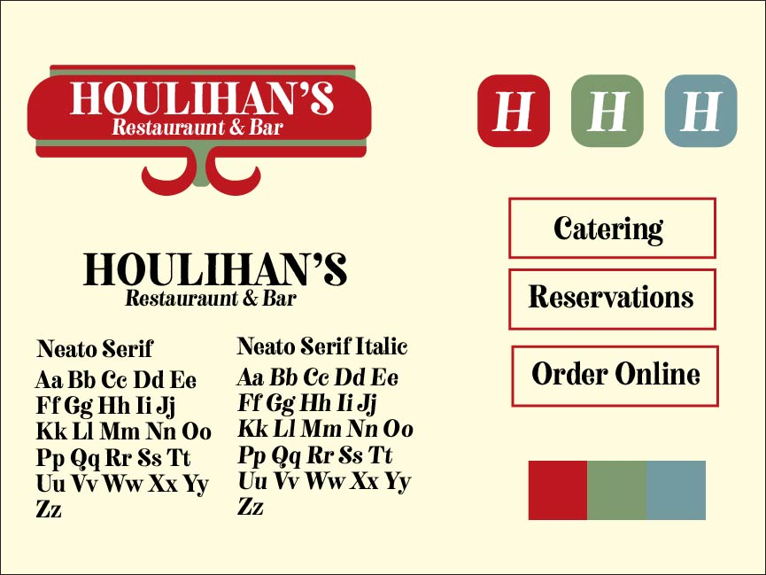

This is a brand deck I completed as a design project. It includes a redesign of the Houlihan's logo. I chose to redesign this
particular logo, as the current logo is very uninteresting. It follows the trend of minimalism which has been sweeping through design in
the last several years, and it does so ineffectively.
I made sure to implement color and personality into my redesign. I used a warm red in order to create a welcoming atmosphere. Because the
establishment that I was trying to represent is a restauraunt and bar, I wanted to represent the idea of community and warmth. I did
this by using a fun, playful font, and referencing diner iconography with my logo. My logo draws upon imagery of restauraunt signs,
which helps it to indicate to the viewer what it is trying to represent. I made sure to maintain a level of simplicity with my design;
I did not want to overwhelm the viewer's eye with too much complexity. I believe that my design strikes an effective balance between
simplicity and complexity.